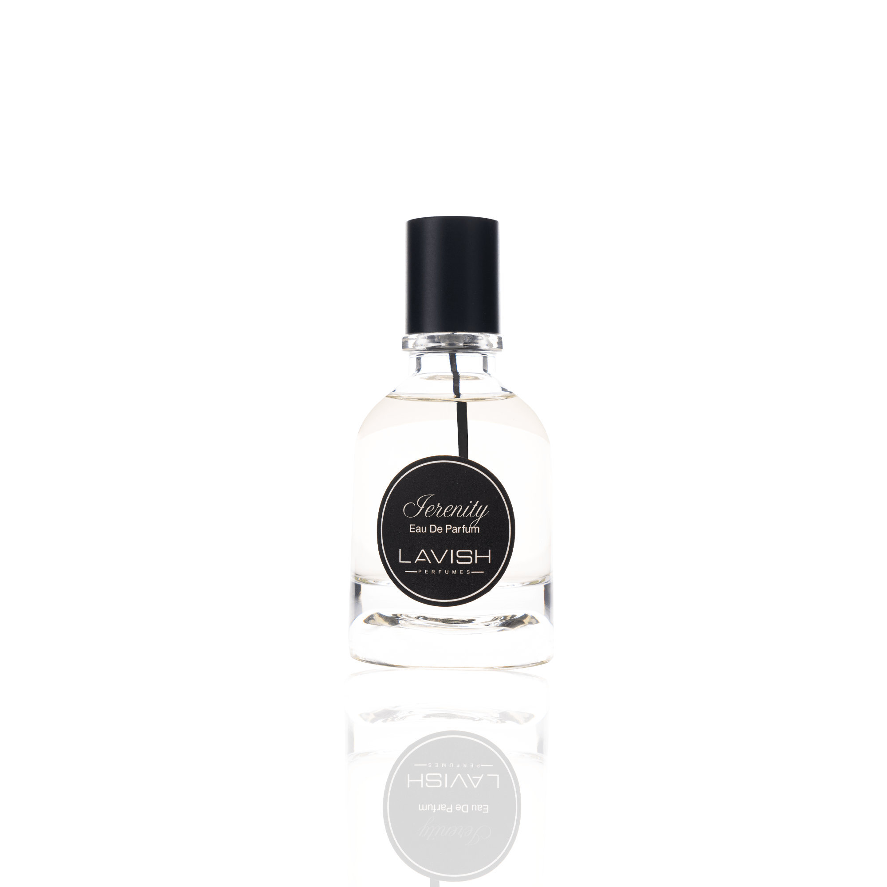
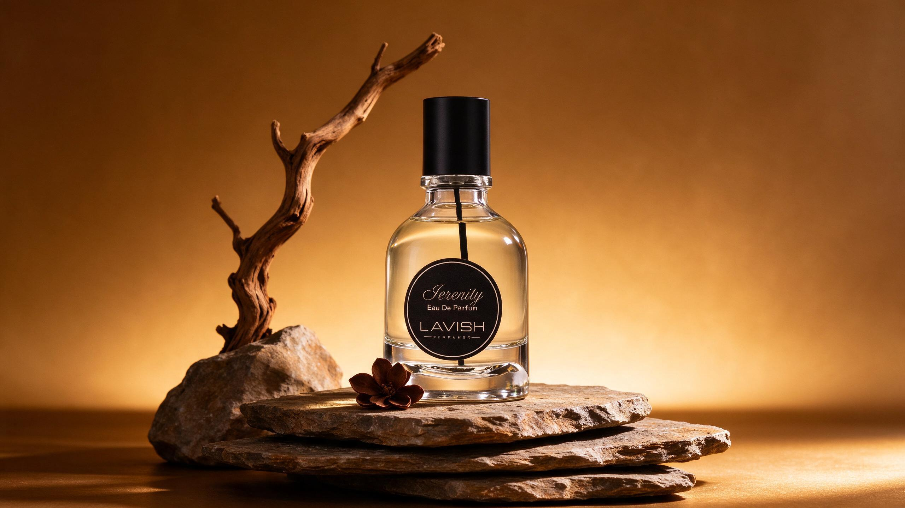
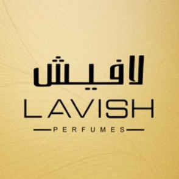

لحظة من الضوء.

Shot 1 · 0.00s – 3.20s
Set SERENITY product-original image at true aspect ratio on a quiet ivory field. A restrained glow enters the frame. A sensory opening is an art-direction device; no literal fruit or top-note order is claimed. Set text in a readable RTL Arabic font; keep Latin SERENITY and Lavish Perfumes isolated to prevent bidi reordering.

Shot 2 · 3.20s – 7.00s
Use the approved SERENITY lifestyle hero and soft floral-inspired shadows. The small decorative flower in the image is a prop; do not identify its species as an ingredient. Keep bottle mark fully visible. Set text in a readable RTL Arabic font; keep Latin SERENITY and Lavish Perfumes isolated to prevent bidi reordering.
Shot 3 · 7.00s – 11.20s
Warm amber-lit still-life with SERENITY and stone/branch environment used only as mood. A gentle slow zoom or photographic pan suggests softness, not a demonstrated fragrance effect or ingredient origin. Set text in a readable RTL Arabic font; keep Latin SERENITY and Lavish Perfumes isolated to prevent bidi reordering.

Shot 4 · 11.20s – 15.00s
Return to a clean SERENITY identity frame and then hold the unaltered Lavish square logo in a properly proportioned tile. End on the product name and editorial CTA with no price, claim, promotion or simulated generation badge embedded in actual creative copy. Set text in a readable RTL Arabic font; keep Latin SERENITY and Lavish Perfumes isolated to prevent bidi reordering.